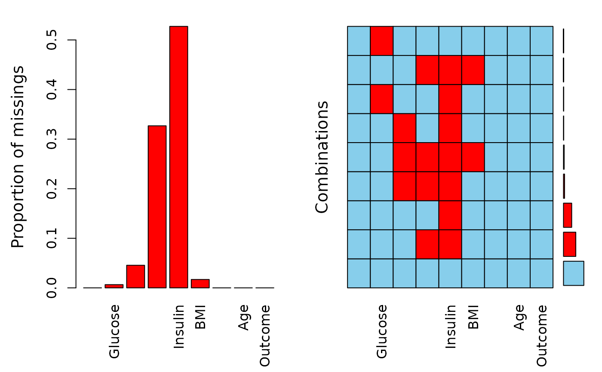

A synthetic replacement for the Pima Indians Diabetes data: 768 observations
on 9 variables, a binary target (Outcome) and medical predictors such as
the number of pregnancies, plasma glucose, BMI, insulin level and age.
Every value is synthetic; no row corresponds to a real person.
A data frame with 768 observations on the following 9 variables.
Number of times pregnant (0 is a valid value)
Plasma glucose concentration at 2 hours in an oral glucose tolerance test
Diastolic blood pressure (mm Hg)
Triceps skin fold thickness (mm)
2-Hour serum insulin (mu U/ml)
Body mass index (weight in kg/(height in m)^2)
Diabetes pedigree function
Age in years
Diabetes (yes or no)
Synthetic. Generated by Matthias Templ from PimaIndiansDiabetes2
(package mlbench) with the synvey package – sequential robust
synthesis with a random-forest backend and the missingness pattern treated
as a structural variable (synvey 0.1.0, R 4.5.2, seed 20260804):
SynthDiabetes <- synvey::robsynth(PimaIndiansDiabetes2,
method = "robust_rf",
missingness = "structural",
coarsen = "age",
target = "sample",
seed = 20260804)$synthThis configuration was selected from a comparison of five synthesis
packages under two designs for the missingness mechanism. Candidates
reproducing any original record verbatim were excluded; the data set
contains no such record. synvey is not on CRAN; it is available from
https://github.com/matthias-da/synvey. For VIM the columns were renamed to
the historical names (pregnant, glucose, pressure, triceps,
insulin, mass, pedigree, age, diabetes became Pregnancies,
Glucose, BloodPressure, SkinThickness, Insulin, BMI,
DiabetesPedigreeFunction, Age, Outcome), counts are stored as
integers and the Outcome levels neg/pos as no/yes. The original
data are neither distributed with VIM nor needed to use this data set.
The original data were collected by the National Institute of Diabetes and Digestive and Kidney Diseases from female patients of Pima Indian heritage aged at least 21. The team that collected them has stated that the data should not have been distributed and has asked for redistribution to stop, while a large body of teaching material and package examples depends on them. This synthetic version exists so that such material keeps working without real patient records being circulated.
The schema follows PimaIndiansDiabetes2 from package mlbench:
physically impossible values (a zero glucose level, blood pressure, skin
fold thickness, insulin level or BMI) are coded as NA, whereas 0
pregnancies is a valid value. Column names, types and the levels of
Outcome are those VIM has used since version 6, so existing code runs
unchanged; only the values differ from the real data shipped before
VIM 7.3.0.
Missing values in the original are not scattered at random: BloodPressure,
SkinThickness and Insulin are frequently missing together, and the
pattern is age-related. The pattern itself was synthesised as a variable
and the missing values imposed from it, so that complete-case and
imputation examples behave as they did before (placing missing values
independently would produce the joint pattern about five times instead of
the observed 19 to 24).
Results computed on these data resemble published analyses of the original without matching them: a logistic regression reaches an AUC of 0.868 against 0.862 on the original, and a model fitted only on the synthetic data reaches 0.854 on the real records. Individual correlations are less reliable – most come out slightly weaker than in the original, but the association between number of pregnancies and age is considerably stronger (0.74 against 0.54). Use the data for teaching, examples and method demonstrations; any result computed on them describes the synthesis, not the Pima population, and must not be read as evidence about diabetes.
Smith, J.W., Everhart, J.E., Dickson, W.C., Knowler, W.C., & Johannes, R.S. (1988). Using the ADAP learning algorithm to forecast the onset of diabetes mellitus. In Proceedings of the Symposium on Computer Applications and Medical Care (pp. 261–265). IEEE Computer Society Press. https://pmc.ncbi.nlm.nih.gov/articles/PMC2245318/ (The study behind the original data; the original data are not redistributed here.)
data(diabetes)
summary(diabetes)
#> Pregnancies Glucose BloodPressure SkinThickness
#> Min. : 0.000 Min. : 57.0 Min. : 24.00 Min. : 7.00
#> 1st Qu.: 1.000 1st Qu.:101.0 1st Qu.: 64.00 1st Qu.:22.00
#> Median : 3.000 Median :119.0 Median : 72.00 Median :30.00
#> Mean : 4.585 Mean :125.3 Mean : 72.59 Mean :29.46
#> 3rd Qu.: 7.000 3rd Qu.:144.5 3rd Qu.: 80.00 3rd Qu.:36.00
#> Max. :13.000 Max. :199.0 Max. :108.00 Max. :63.00
#> NAs :5 NAs :35 NAs :251
#> Insulin BMI DiabetesPedigreeFunction Age
#> Min. : 14 Min. :18.20 Min. :0.0780 Min. :21.00
#> 1st Qu.: 76 1st Qu.:27.80 1st Qu.:0.2430 1st Qu.:24.00
#> Median :125 Median :32.80 Median :0.3670 Median :28.00
#> Mean :159 Mean :32.87 Mean :0.4792 Mean :33.05
#> 3rd Qu.:194 3rd Qu.:36.95 3rd Qu.:0.6450 3rd Qu.:41.00
#> Max. :846 Max. :59.40 Max. :2.4200 Max. :81.00
#> NAs :405 NAs :13
#> Outcome
#> no :488
#> yes:280
#>
#>
#>
#>
#>
# missingness is structured rather than scattered
aggr(diabetes)
